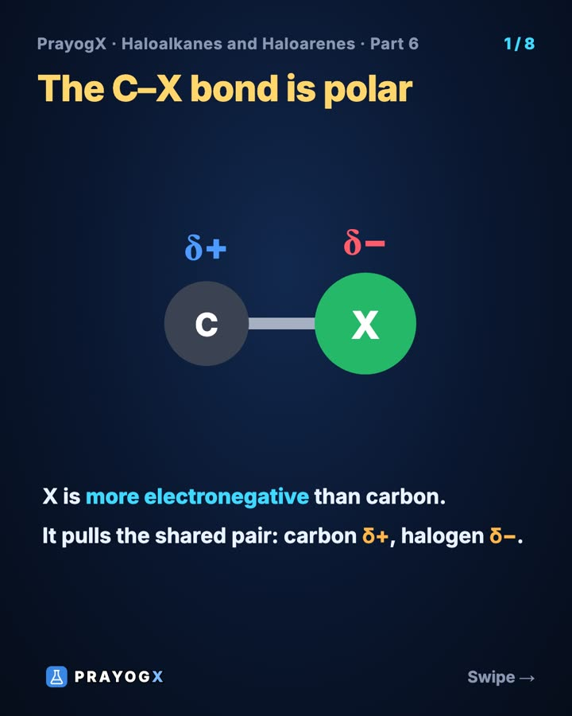
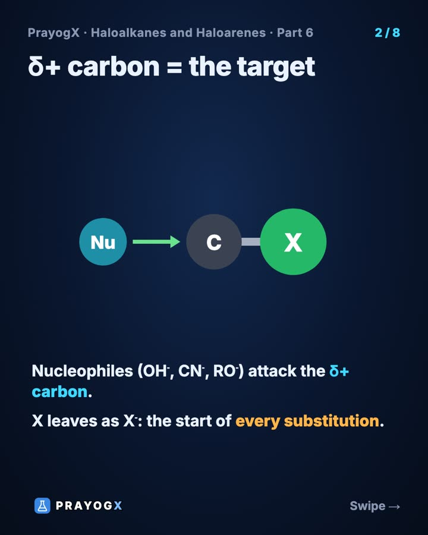
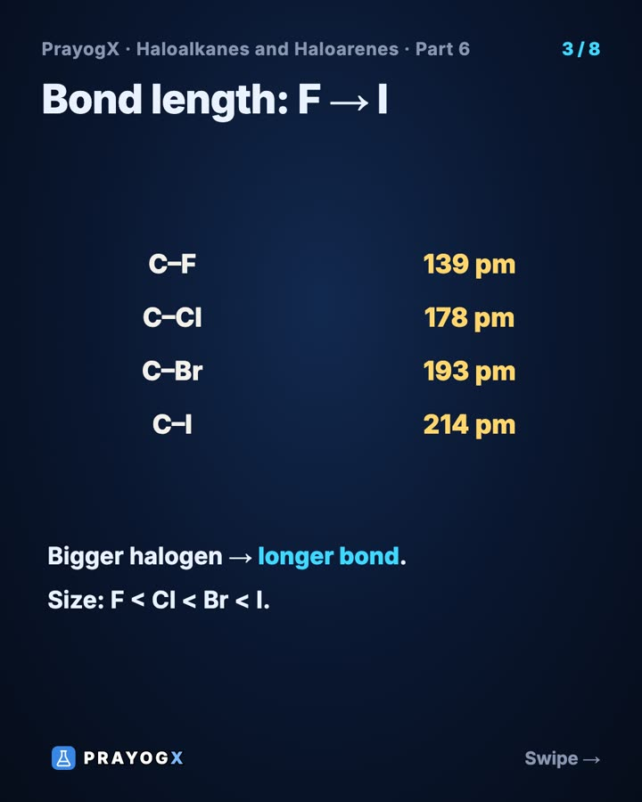
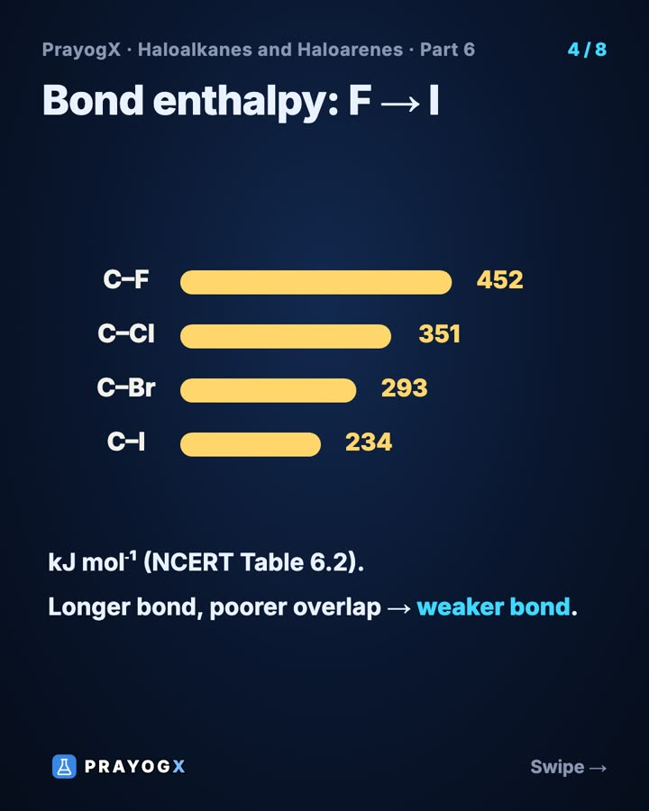
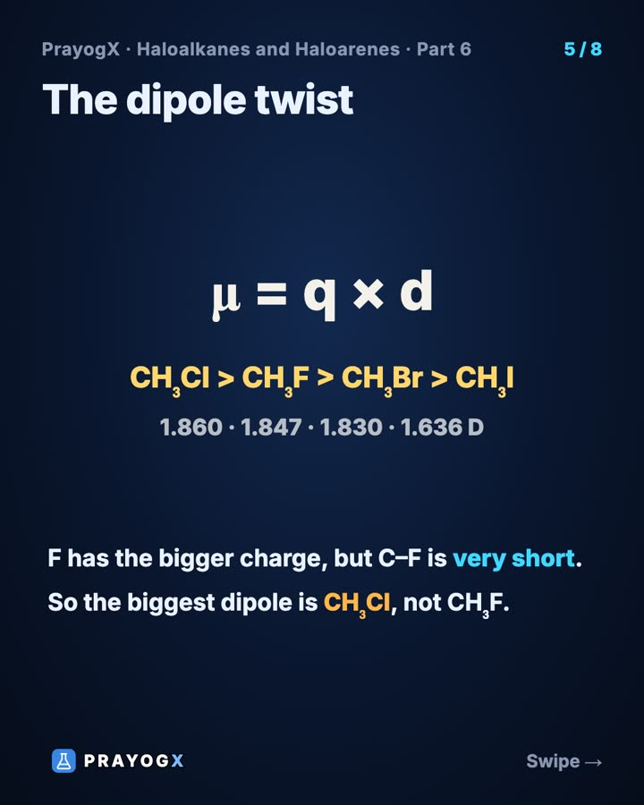
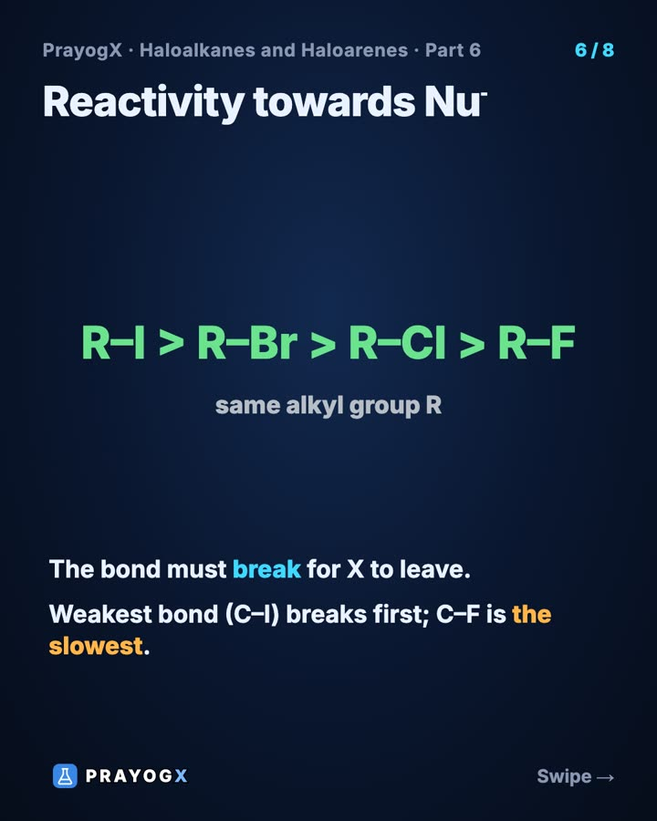
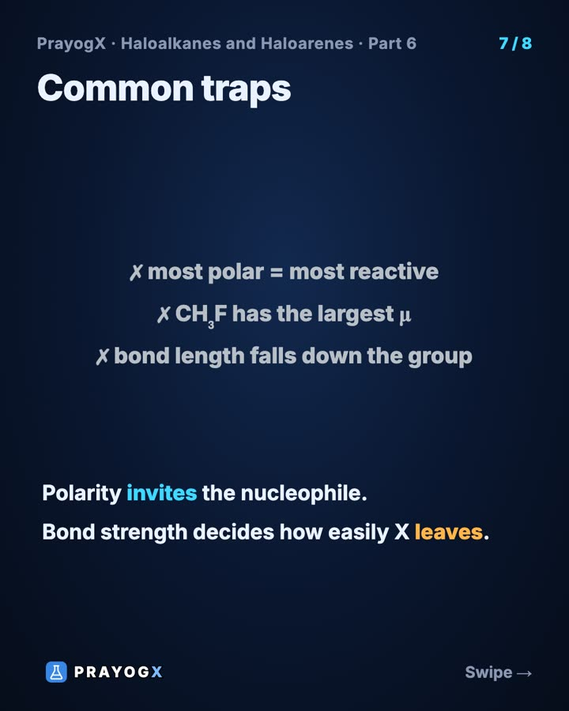
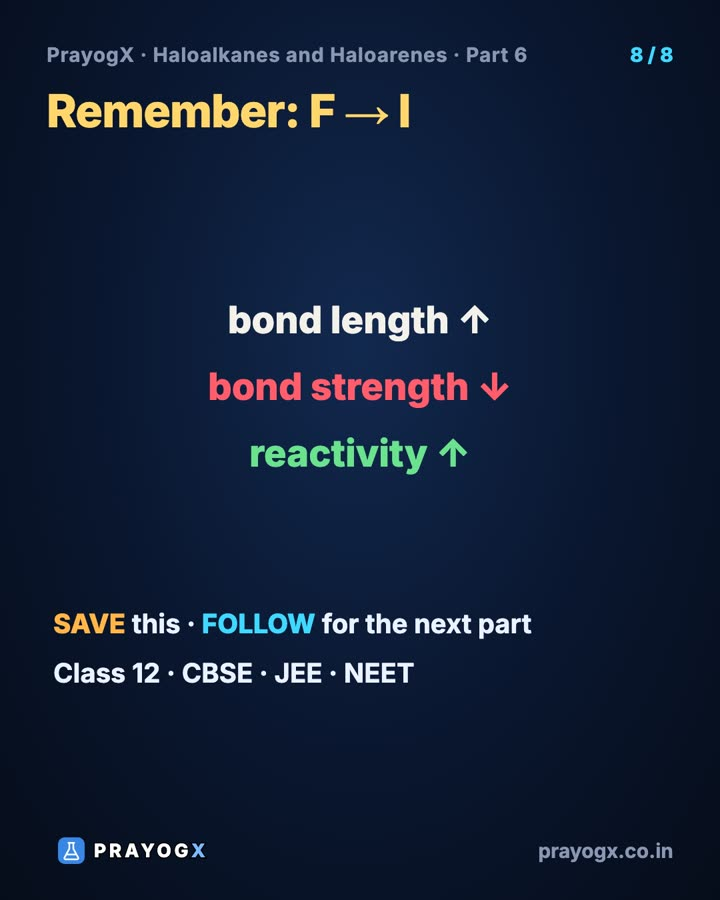
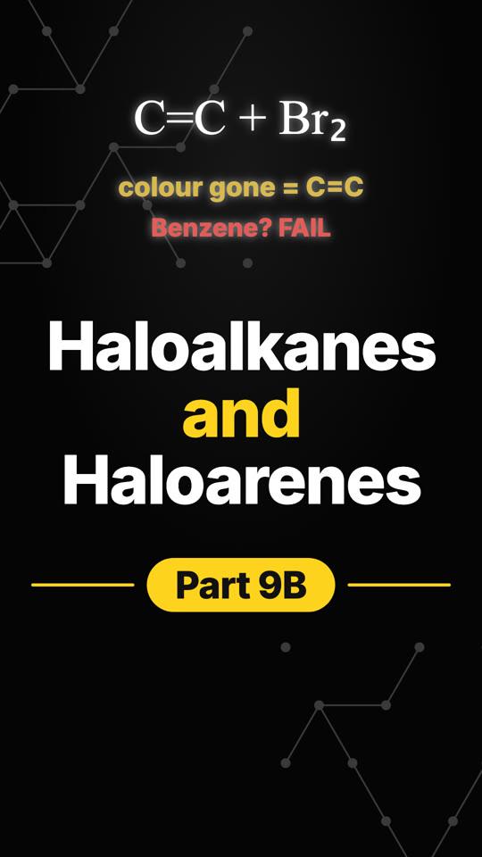

The Polar C–X Bond: Polarity, Bond Length and Strength
Video not playing? YouTube
The C–X bond is polar: the halogen pulls the shared pair, so carbon is δ+ and the halogen δ−, and nucleophiles attack that carbon. From F to I the halogen gets bigger, so the C–X bond gets longer (139 → 214 pm) and weaker (452 → 234 kJ mol⁻¹). That is why R–I reacts fastest and R–F slowest, even though fluorine is the most electronegative halogen; and why CH₃Cl, not CH₃F, has the largest dipole moment (μ = q × d).
Download the short notesPDF, 278 KB · polarity, bond length, bond enthalpy, dipole moment and reactivity, with NCERT data Download the memory cards
PDF, 804 KB · 8 cards: the whole topic at a glance, for quick revision Download the CBSE worksheet
PDF, 248 KB · 15 questions in the CBSE pattern, write your answers on the sheet; answer key at the endDownload the JEE Main DPP
PDF, 254 KB · 20 MCQs: JEE Main PYQs + practice, answer key and solutions Up next in this chapter
 Haloalkanes from Alcohols: HX, PCl₃, PCl₅ and SOCl₂One rule: R–OH → R–X, the OH group is replaced by a halogen; only the reagent and its by-products change. HX gives water (anhydrous ZnCl₂ for 1° and 2° alcohols; reactivity 3° > 2° > 1°), PCl₃ gives H₃PO₃ (1 PCl₃ : 3 R–OH), PCl₅ gives POCl₃ + HCl, and SOCl₂ gives SO₂ + HCl, two gases that escape, so the alkyl chloride is pure. Phenol does not react this way: its C–O bond has partial double-bond character.Chemistry
Haloalkanes from Alcohols: HX, PCl₃, PCl₅ and SOCl₂One rule: R–OH → R–X, the OH group is replaced by a halogen; only the reagent and its by-products change. HX gives water (anhydrous ZnCl₂ for 1° and 2° alcohols; reactivity 3° > 2° > 1°), PCl₃ gives H₃PO₃ (1 PCl₃ : 3 R–OH), PCl₅ gives POCl₃ + HCl, and SOCl₂ gives SO₂ + HCl, two gases that escape, so the alkyl chloride is pure. Phenol does not react this way: its C–O bond has partial double-bond character.Chemistry
Key points
- The C–X bond is polar: X is more electronegative than C, so carbon is δ+ and the halogen δ−.
- Nucleophiles (OH⁻, CN⁻, RO⁻) attack the δ+ carbon and push out X⁻.
- From F to I the halogen gets bigger: bond length increases (139, 178, 193, 214 pm).
- Longer bond, poorer overlap: bond enthalpy decreases (452, 351, 293, 234 kJ mol⁻¹).
- μ = q × d, so the largest dipole is CH₃Cl (1.860 D) > CH₃F > CH₃Br > CH₃I.
- Reactivity towards nucleophiles: R–I > R–Br > R–Cl > R–F: the weakest bond breaks first.
Polarity: a tug of war for the shared pair
In a haloalkane the halogen X is bonded to an sp³ carbon by one shared pair. Every halogen is more electronegative than carbon, so it pulls the shared pair towards itself. Carbon becomes δ+ and the halogen δ−: the C–X bond is a polar bond.
| Atom | C | F | Cl | Br | I |
|---|---|---|---|---|---|
| Electronegativity (Pauling) | 2.55 | 3.98 | 3.16 | 2.96 | 2.66 |
Why it matters: the δ+ carbon is the target of every nucleophile (OH⁻, CN⁻, RO⁻). The nucleophile attacks it and X leaves as X⁻: the start of nucleophilic substitution, SN1, SN2 and elimination.
Size, bond length and bond strength
Down group 17 the halogen atom gets bigger, so the C–X bond gets longer. A bigger halogen overlaps less well with carbon, and a longer bond is a weaker bond, so the bond enthalpy falls.
| Bond | Bond length (pm) | Bond enthalpy (kJ mol⁻¹) | Dipole moment (D) |
|---|---|---|---|
| CH₃–F | 139 | 452 | 1.847 |
| CH₃–Cl | 178 | 351 | 1.860 |
| CH₃–Br | 193 | 293 | 1.830 |
| CH₃–I | 214 | 234 | 1.636 |
Data: NCERT Class 12 Chemistry, Table 6.2.
The dipole-moment twist
μ = q × d
Fluorine carries the biggest partial charge, but the C–F bond is very short. Chlorine's charge is a little smaller, but its bond is much longer, so the product is largest for CH₃Cl: CH₃Cl > CH₃F > CH₃Br > CH₃I.
Solving the puzzle: reactivity
All four C–X bonds are polar, so the nucleophile is attracted in every case. But X can only leave if the C–X bond breaks, and the weakest bond breaks fastest. So, for the same alkyl group:
R–I > R–Br > R–Cl > R–F
Takeaway: polarity invites the nucleophile; bond strength decides how easily the halogen leaves. From F to I: bond longer, bond weaker, reactivity higher.
Common mistakes
- “C–F is the most reactive because F is the most electronegative.” It is the least reactive: C–F is the strongest bond.
- “CH₃F has the largest dipole moment.” It is CH₃Cl, because μ depends on distance as well as charge.
- “Bond length falls down the group.” It rises, 139 → 214 pm.
Memory cards
Swipe through the 8 cards to revise this topic in a minute.








PDF, 804 KB · 8 cards: the whole topic at a glance, for quick revision
More from Haloalkanes and Haloarenes
 Naming Haloalkanes and Haloarenes: Common and IUPAC NamesEvery halide has two correct names. The common name is the alkyl group + halide (isopropyl chloride, ethyl chloride). The IUPAC name writes the halogen as a prefix (fluoro, chloro, bromo, iodo) on the longest chain, numbered from the end that gives the lowest locants; when both ends tie, alphabetical order decides (2-bromo-3-methylbutane). On benzene one halogen keeps the same name (chlorobenzene); two use o-, m-, p- in common names and 1,2 / 1,3 / 1,4 in IUPAC.Chemistry
Naming Haloalkanes and Haloarenes: Common and IUPAC NamesEvery halide has two correct names. The common name is the alkyl group + halide (isopropyl chloride, ethyl chloride). The IUPAC name writes the halogen as a prefix (fluoro, chloro, bromo, iodo) on the longest chain, numbered from the end that gives the lowest locants; when both ends tie, alphabetical order decides (2-bromo-3-methylbutane). On benzene one halogen keeps the same name (chlorobenzene); two use o-, m-, p- in common names and 1,2 / 1,3 / 1,4 in IUPAC.Chemistry Name and Classify Haloalkanes: NCERT Questions SolvedThree NCERT exercise questions solved with one checklist: longest chain (look inside the branches), lowest locants, alphabetical order on a tie; and the class (1°, 2°, 3°) is decided only by the carbon that carries the halogen. CH₃CH₂C(CH₃)₂CH₂I is 1-iodo-2,2-dimethylbutane (1°), CH₃C(Cl)(C₂H₅)CH₂CH₃ is 3-chloro-3-methylpentane (3°), and CH₃CH(Cl)CH(Br)CH₃ is 2-bromo-3-chlorobutane.Chemistry
Name and Classify Haloalkanes: NCERT Questions SolvedThree NCERT exercise questions solved with one checklist: longest chain (look inside the branches), lowest locants, alphabetical order on a tie; and the class (1°, 2°, 3°) is decided only by the carbon that carries the halogen. CH₃CH₂C(CH₃)₂CH₂I is 1-iodo-2,2-dimethylbutane (1°), CH₃C(Cl)(C₂H₅)CH₂CH₃ is 3-chloro-3-methylpentane (3°), and CH₃CH(Cl)CH(Br)CH₃ is 2-bromo-3-chlorobutane.Chemistry One Atom, Many Lives: Haloalkanes and HaloarenesIn 1847 James Simpson found that chloroform, CHCl₃, could put people to sleep for surgery. Replace a hydrogen of a hydrocarbon with a halogen and you get a haloalkane (halogen on an sp³ alkyl carbon) or a haloarene (halogen on an sp² ring carbon). They are everywhere: chloramphenicol for typhoid, thyroxine with four iodine atoms, chloroquine for malaria, halothane for anaesthesia. The polar C–X bond, with a δ+ carbon, is why they react, and it opens the whole chapter.Chemistry · 9:16 + 16:9
One Atom, Many Lives: Haloalkanes and HaloarenesIn 1847 James Simpson found that chloroform, CHCl₃, could put people to sleep for surgery. Replace a hydrogen of a hydrocarbon with a halogen and you get a haloalkane (halogen on an sp³ alkyl carbon) or a haloarene (halogen on an sp² ring carbon). They are everywhere: chloramphenicol for typhoid, thyroxine with four iodine atoms, chloroquine for malaria, halothane for anaesthesia. The polar C–X bond, with a δ+ carbon, is why they react, and it opens the whole chapter.Chemistry · 9:16 + 16:9 Count the Halogens: Mono, Di, Poly, Gem and VicHalogen compounds are classified first by the number of halogen atoms: one is mono, two is di, three or more is poly (tri-, tetra-). Count the halogens, not the carbons: chloroform, CHCl₃, has one carbon but three chlorines, so it is a polyhalogen compound. Dihalides split by position: both halogens on the same carbon is a gem-dihalide (alkylidene halide, e.g. ethylidene chloride, 1,1-dichloroethane); on adjacent carbons a vic-dihalide (alkylene dihalide, e.g. ethylene dichloride, 1,2-dichloroethane).Chemistry
Count the Halogens: Mono, Di, Poly, Gem and VicHalogen compounds are classified first by the number of halogen atoms: one is mono, two is di, three or more is poly (tri-, tetra-). Count the halogens, not the carbons: chloroform, CHCl₃, has one carbon but three chlorines, so it is a polyhalogen compound. Dihalides split by position: both halogens on the same carbon is a gem-dihalide (alkylidene halide, e.g. ethylidene chloride, 1,1-dichloroethane); on adjacent carbons a vic-dihalide (alkylene dihalide, e.g. ethylene dichloride, 1,2-dichloroethane).Chemistry Alkyl, Vinyl, Allyl and Aryl Halides: Which Carbon Holds X?Alkyl, vinyl (vinylic), allyl (allylic) and aryl halides differ only in the carbon that holds the halogen. Alkyl: a saturated sp³ carbon (1°, 2°, 3° by the alkyl groups on it). Vinyl: X directly on a carbon of a C=C (sp²). Allyl: X on the sp³ carbon next to a C=C. Aryl: X directly on a carbon of an aromatic ring (sp²), e.g. chlorobenzene. Bonus: X on the sp³ CH₂ next to a benzene ring is a benzyl (benzylic) halide. Identify the carbon attached to X: that's the key.Chemistry
Alkyl, Vinyl, Allyl and Aryl Halides: Which Carbon Holds X?Alkyl, vinyl (vinylic), allyl (allylic) and aryl halides differ only in the carbon that holds the halogen. Alkyl: a saturated sp³ carbon (1°, 2°, 3° by the alkyl groups on it). Vinyl: X directly on a carbon of a C=C (sp²). Allyl: X on the sp³ carbon next to a C=C. Aryl: X directly on a carbon of an aromatic ring (sp²), e.g. chlorobenzene. Bonus: X on the sp³ CH₂ next to a benzene ring is a benzyl (benzylic) halide. Identify the carbon attached to X: that's the key.Chemistry Free Radical Mechanism: Halogenation of AlkanesButane + Cl₂ in UV light gives 1-chlorobutane and 2-chlorobutane, because butane has primary and secondary hydrogens. The free-radical chain has three stages: initiation (Cl₂ splits homolytically into 2 Cl•), propagation (Cl• abstracts an H to give HCl and a butyl radical, which takes Cl from Cl₂ and releases a new Cl•) and termination (two radicals combine). The yield of any one product is low: isomers and polychloro products form a mixture that is hard to separate.Chemistry
Free Radical Mechanism: Halogenation of AlkanesButane + Cl₂ in UV light gives 1-chlorobutane and 2-chlorobutane, because butane has primary and secondary hydrogens. The free-radical chain has three stages: initiation (Cl₂ splits homolytically into 2 Cl•), propagation (Cl• abstracts an H to give HCl and a butyl radical, which takes Cl from Cl₂ and releases a new Cl•) and termination (two radicals combine). The yield of any one product is low: isomers and polychloro products form a mixture that is hard to separate.Chemistry Markovnikov's Rule: Addition of HX to AlkenesPropene + HI gives 2-iodopropane (major) and 1-iodopropane (minor). In step 1 the π electrons of C=C move to the H of HI, forming a C–H bond on the CH₂ carbon, while the H–I pair goes to iodine (I⁻); the + is left on the middle carbon, a secondary carbocation. A 2° carbocation is more stable than a 1° one, so that pathway is favoured, and I⁻ then bonds to it. Markovnikov's rule: H goes to the double-bond carbon with more H atoms, the halogen to the one with fewer.Chemistry
Markovnikov's Rule: Addition of HX to AlkenesPropene + HI gives 2-iodopropane (major) and 1-iodopropane (minor). In step 1 the π electrons of C=C move to the H of HI, forming a C–H bond on the CH₂ carbon, while the H–I pair goes to iodine (I⁻); the + is left on the middle carbon, a secondary carbocation. A 2° carbocation is more stable than a 1° one, so that pathway is favoured, and I⁻ then bonds to it. Markovnikov's rule: H goes to the double-bond carbon with more H atoms, the halogen to the one with fewer.Chemistry
Addition of Halogens to Alkenes: the Bromine TestEthene + Br₂ in CCl₄ gives BrCH₂–CH₂Br: the π bond breaks and one Br adds to each double-bond carbon, giving a vic-dibromide. The reddish-brown colour of bromine disappears, so the reaction is the lab test for unsaturation. Propene gives 1,2-dibromopropane and cyclohexene gives 1,2-dibromocyclohexane. Benzene fails the test: adding Br₂ would destroy its aromatic stability, so the colour stays.Chemistry NCERT Example 6.3: Monochloro Structural Isomers of 2-MethylbutaneFree radical monochlorination of (CH₃)₂CHCH₂CH₃ (2-methylbutane) gives 4 monochloro structural isomers, not 5: the two CH₃ groups on the CH carbon are equivalent, so the molecule has only 4 kinds of hydrogen. Replacing one H of each kind gives 1-chloro-3-methylbutane, 2-chloro-3-methylbutane, 2-chloro-2-methylbutane and 1-chloro-2-methylbutane. Counting stereoisomers (JEE), the total is 6.Chemistry
NCERT Example 6.3: Monochloro Structural Isomers of 2-MethylbutaneFree radical monochlorination of (CH₃)₂CHCH₂CH₃ (2-methylbutane) gives 4 monochloro structural isomers, not 5: the two CH₃ groups on the CH carbon are equivalent, so the molecule has only 4 kinds of hydrogen. Replacing one H of each kind gives 1-chloro-3-methylbutane, 2-chloro-3-methylbutane, 2-chloro-2-methylbutane and 1-chloro-2-methylbutane. Counting stereoisomers (JEE), the total is 6.Chemistry Halogen Exchange: Finkelstein and Swarts ReactionsHalogen exchange (NCERT 6.4.3) swaps the Cl or Br of an alkyl halide for another halogen. Finkelstein: R–X + NaI in dry acetone gives R–I; NaCl / NaBr is insoluble in dry acetone and precipitates, so by Le Chatelier's principle the reaction goes forward. Swarts: heating R–Cl / R–Br with a heavy metallic fluoride (AgF, Hg₂F₂, CoF₂ or SbF₃) gives the alkyl fluoride. Trick: Finkelstein → iodide, Swarts → fluoride.Chemistry
Halogen Exchange: Finkelstein and Swarts ReactionsHalogen exchange (NCERT 6.4.3) swaps the Cl or Br of an alkyl halide for another halogen. Finkelstein: R–X + NaI in dry acetone gives R–I; NaCl / NaBr is insoluble in dry acetone and precipitates, so by Le Chatelier's principle the reaction goes forward. Swarts: heating R–Cl / R–Br with a heavy metallic fluoride (AgF, Hg₂F₂, CoF₂ or SbF₃) gives the alkyl fluoride. Trick: Finkelstein → iodide, Swarts → fluoride.Chemistry